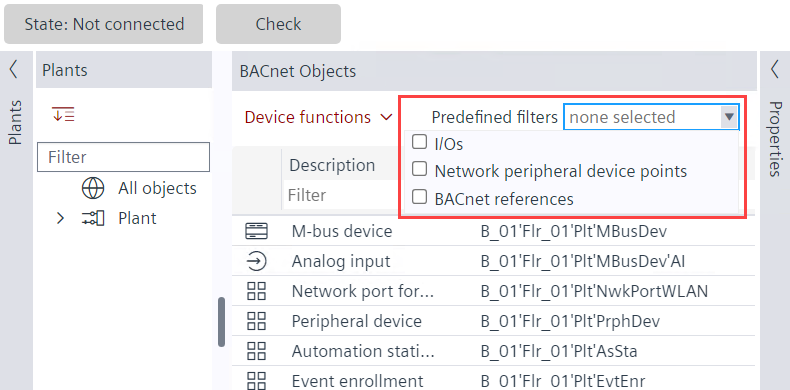

为 BACnet 对象设置过滤器
- Go to Building > Building structure.
- Right-click the device and select Go to engineering.
- Open the BACnet objects task.
组合框显示 BACnet 对象的以下预定义过滤器：
- I/Os: Filters all the I/Os in the selected scope.
- Network peripheral device points: Filters all the network field device points in the selected scope (excluding the network field devices).
- BACnet references: Filters all the BACnet reference objects in the selected scope.
- In the Plants navigation view, select the plant or folder where you want to set the filter.
- Go to Predefined filters.

- Select the required filter from the following:
- I/Os
- Network peripheral device points
- BACnet references
- To change the description of the data points, click on the data point under the Description column and make changes.
Online engineering filters
- Go to Engineering.
- Open the BACnet objects task and go online.
- Set filters in the following columns:
- Value/Unit
- Commissioning
对于表过滤器，请参阅Setting table filters in the Engineering tab.